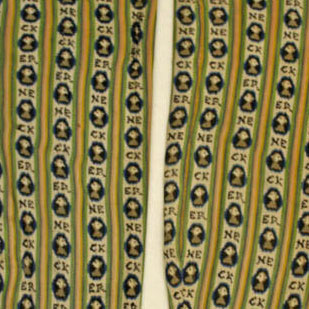

Variations on a Grid
If you can see this note, then your browser doesn't support CSS Grid yet. It shipped in Firefox 52 on March 7, 2017, Chrome 57 on March 10, 2017, and will ship in Safari 10.1 soon after.
Fixed
Fluid
Responsive


- 


If you can see this note, then your browser doesn't support CSS Grid yet. It shipped in Firefox 52 on March 7, 2017, Chrome 57 on March 10, 2017, and will ship in Safari 10.1 soon after.